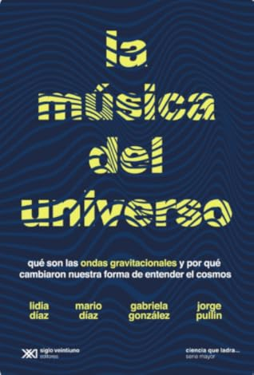

La música del universo: Qué son la ondas gravitacionales y por qué cambiaron nuestra forma de entender el cosmos
Reseña por Jorge I. Zuluaga

Ver reseña en GoodReads (necesita cuenta)
Debo confesar que fui muy afortunado de tener a mano este ejemplar —adquirido meses atrás por curiosidad y recomendación de un buen amigo—, pues encajaba perfectamente con el tema de mi intervención, que titulé «Cuando pasa el temblor». Me refería, por supuesto, a esos «temblores» del espacio-tiempo (como me gusta llamar informalmente a las ondas gravitacionales), pero también hacía una alusión directa al clásico de Soda Stereo que, seguramente, muchas de las personas que leen esta reseña conocerán.
Para mi sorpresa, he descubierto que Soda Stereo no es tan conocida en España. Por ello, si aún no han tenido el gusto de escucharlos, aquí les dejo el enlace para que disfruten y se introduzcan en el universo sonoro de una de las bandas de rock más grandes de Latinoamérica.
La primera sorpresa al abrir el libro fue la impresionante trayectoria de quienes lo firman. No es un detalle menor que la carátula de una obra de divulgación luzca cuatro nombres, especialmente cuando trata un tema que, en este nivel, podría haber sido abordado por una sola persona.
Este libro pertenece a la extraordinaria colección «Ciencia que Ladra», dirigida por el científico y divulgador argentino Diego Golombek. Para escribirlo, se reunieron algun@s de l@s especialistas en relatividad general y ondas gravitacionales más destacad@s de Argentina. O, mejor dicho, de origen argentino, porque tod@s ell@s han desarrollado sus brillantes carreras en los Estados Unidos. Personalmente, sostengo que un@ profesional es de donde le cuidan y le financian, no de donde indica su certificado de nacimiento; pero como es un debate abierto, no profundizaré más.
Entre las firmas de este bello texto destaca, por ejemplo, Gabriela González, quien fue nada más y nada menos que la portavoz de la colaboración LIGO cuando se anunció el histórico descubrimiento de la primera onda gravitacional en 2015. Por ello, los «secreticos» y detalles que se cuelan en el libro sobre aquellas semanas apasionantes entre finales de 2015 y principios de 2016 —cuando comenzó la aventura de observar el universo a través de los temblores del espacio-tiempo— provienen de fuentes de absoluta confianza.
«La música del Universo» es un libro breve pero sustancioso. Primero, realiza un recorrido general por la historia de la gravitación, enfatizando el surgimiento de la relatividad galileana, la mecánica de Newton y, por supuesto, las relatividades especial y general del siglo XX. En segundo lugar, se enfoca en la investigación teórica reciente y en la búsqueda experimental: desde la detección indirecta mediante púlsares binarios hasta el éxito de los detectores interferométricos LIGO y Virgo. El cierre ofrece una interesante incursión en el futuro de esta disciplina y las implicaciones que tendrá para la astronomía y la física fundamental.
Un detalle que lamenté profundamente en el recorrido histórico es la ausencia de Mileva Marić, colaboradora científica de Albert Einstein durante su periodo más creativo y pieza clave en la gestación de las ideas centrales de la relatividad. Marić, como sabrán, fue su primera esposa y madre de sus dos hijos: Eduard «Tete», quien tristemente falleció joven tras lidiar con una enfermedad mental, pero a quien sus padres consideraban un genio, y Hans Albert, quien se convirtió en un destacado científico en los Estados Unidos.
La omisión de Mileva me dolió especialmente porque el texto posee un valioso enfoque de género que aprecié muchísimo y que debería ser un estándar en la divulgación científica. No me cabe duda de que esta perspectiva inclusiva nació de las autoras, las doctoras Lidia Díaz y Gabriela González, respaldadas por la convicción de sus colegas Mario Díaz y Jorge Pullin. En cada página se siente la presencia de las miles de mujeres que hoy lideran la física de ondas gravitacionales. Me encantó, por ejemplo, el uso sistemático del carácter «@» para evitar el lenguaje excluyente, desafiando las estrictas normas de la RAE (dictadas, mayoritariamente, por académicos varones). Como usuario frecuente de esta fórmula, me produjo una gran satisfacción ver que otr@s colegas la integren en un libro formal.
El nivel de la obra es excelente. Aunque los fundamentos históricos se repasan con rapidez, los apartados dedicados a la física de las ondas gravitacionales —desde las predicciones originales de Einstein hasta los hitos más recientes— se tratan con un rigor que satisfará a aficionad@s y profesionales por igual.
En síntesis: un libro sobre un tema apasionante, escrito por algun@s de l@s mejores en el área y con un enfoque inclusivo necesario. Como decimos en Colombia: ¿qué más les pide el cuerpo?